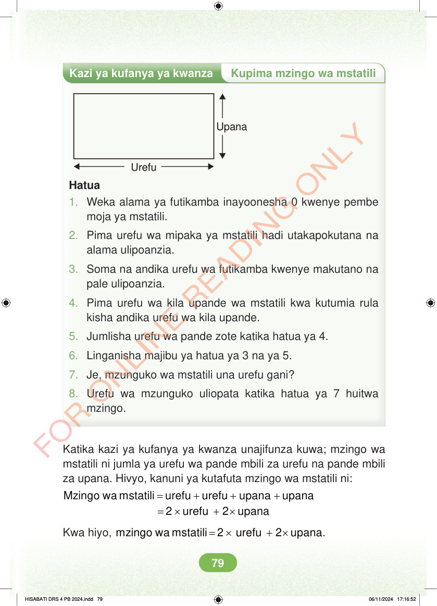

<!DOCTYPE html>
<html lang="sw-TZ"><head><meta charset="utf-8"><meta name="viewport" content="width=device-width,initial-scale=1">
<title>Hisabati: Kitabu cha Mwanafunzi Darasa la Nne</title>
<meta name="title-id" content="pg085_sec001"><meta name="page-section-id" content="89">
<link href="./content/tailwind_output.css" rel="stylesheet"><link href="./assets/libs/fontawesome/css/all.min.css" rel="stylesheet"><link href="./assets/fonts.css" rel="stylesheet">
<style>body{margin:0;background:#eef1ed}main{width:100%;display:flex;justify-content:center;padding:1rem 1rem 5rem;box-sizing:border-box}#content{width:100%;display:flex;justify-content:center}.pdf-page{position:relative;width:min(calc(100vw - 2rem),56rem);aspect-ratio:540.8980102539062/750.6610107421875;background:white;box-shadow:0 4px 24px #0002;overflow:hidden}.pdf-page img{position:absolute;inset:0;width:100%;height:100%;object-fit:fill}</style>
</head><body><main><h1 class="sr-only" id="page-heading">Ukurasa wa 85</h1><div id="content" class="opacity-0"><section role="article" data-section-type="pdf_accessible_page" data-section-id="pg085_sec001" aria-labelledby="page-heading" class="pdf-page"><p class="sr-only" data-id="pg085_gp001_tx001">Kazi ya kufanya ya kwanza Kupima mzingo wa mstatili Upana Urefu Hatua 1. Weka alama ya futikamba inayoonesha 0 kwenye pembe moja ya mstatili. 2. Pima urefu wa mipaka ya mstatili hadi utakapokutana na alama ulipoanzia. 3. Soma na andika urefu wa futikamba kwenye makutano na pale ulipoanzia. 4. Pima urefu wa kila upande wa mstatili kwa kutumia rula kisha andika urefu wa kila upande. 5. Jumlisha urefu wa pande zote katika hatua ya 4. 6. Linganisha majibu ya hatua ya 3 na ya 5. 7. Je, mzunguko wa mstatili una urefu gani? 8. Urefu wa mzunguko uliopata katika hatua ya 7 huitwa mzingo. Katika kazi ya kufanya ya kwanza unajifunza kuwa; mzingo wa mstatili ni jumla ya urefu wa pande mbili za urefu na pande mbili za upana. Hivyo, kanuni ya kutafuta mzingo wa mstatili ni: = + + + = × + × Mzingo wa mstatili urefu urefu upana upana 2 urefu 2 upana Kwa hiyo, = × + × mzingo wa mstatili 2 urefu 2 upana. HISABATI DRS 4 PB 2024.indd 79 HISABATI DRS 4 PB 2024.indd 79 06/11/2024 17:16:52 06/11/2024 17:16:52</p></section></div></main><div class="relative z-50" id="interface-container"></div><div class="relative z-50" id="nav-container"></div><script src="./assets/offline-preloader.js?v=audiofix-20260824-1"></script><script src="./assets/scorm.js"></script><script src="./assets/base.bundle.local.js?v=audiofix-20260824-1"></script></body></html>